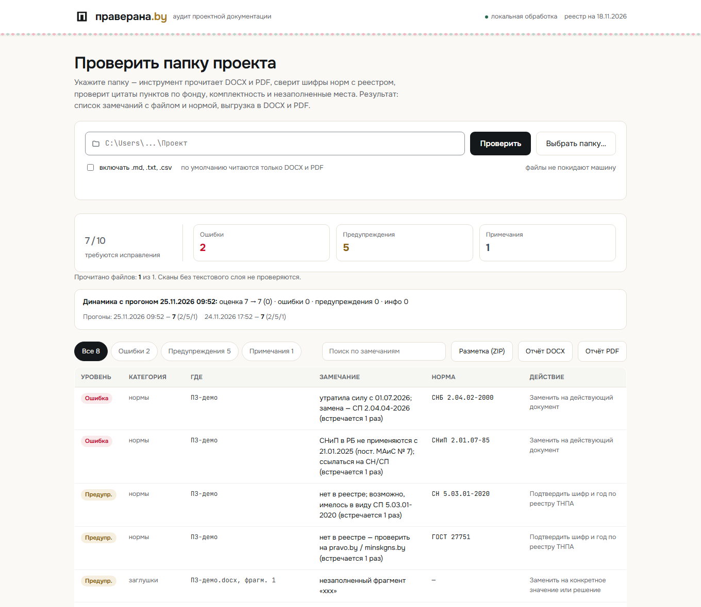
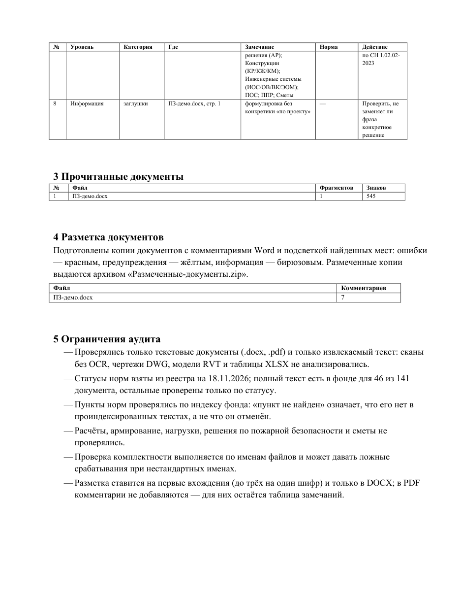
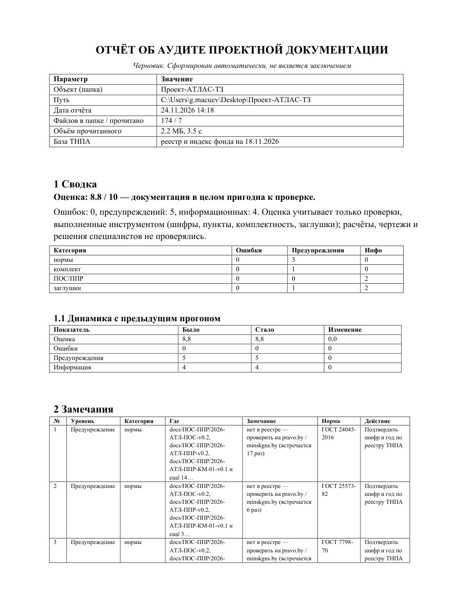
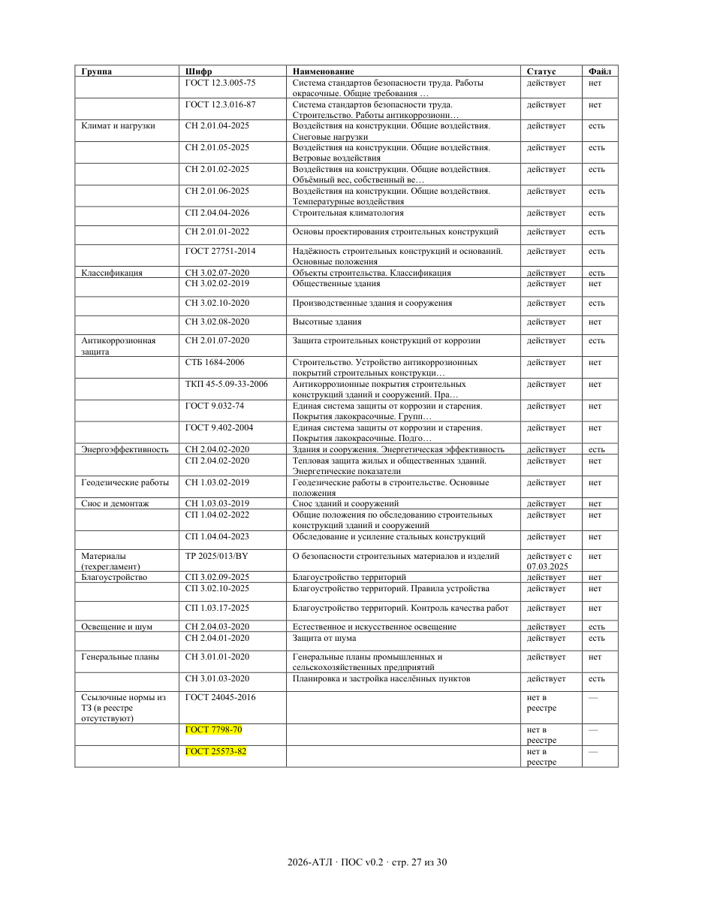
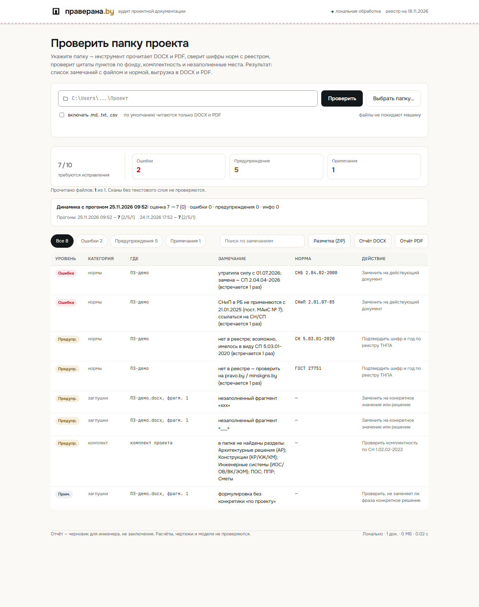

Беларусь · реестр ТНПА на 18.11.2026
Проект проверен. Праверана.
Каждое замечание — с нормой, файлом и страницей. Инструмент читает папку проекта и находит отменённые шифры, пункты, которых нет в норме, дыры в комплекте и незаполненные места.
141 документ в перечне ТНПА, 44 989 пунктов в индексе, файлы не покидают машину.

Пять проверок. Считает код по реестру и индексу, не модель.
Каждая строка отчёта проверяема: открывается документ, страница и норма.
- Шифры нормОтменена, заменена, не подтверждена01
- Пункты«СН … п. 6.3.4.1» — есть ли такой пункт и где02
- КомплектПЗ, АР, КР, ИОС, ПОС, ППР, сметы03
- Состав ПОС и ППРБлоки приложений Г и В СН 1.03.04-202004
- Заглушки«ХХХ», «___», «заполнить», «по проекту»05

Отчёт, который можно защищать
Не «рекомендуем обратить внимание», а таблица: уровень, где, замечание, норма, действие.
- Сводка с оценкой0–10
- Динамика с прошлым прогономΔ
- Замечания с файлом и страницейDOCX
- Ограничения аудитаPDF

Замечание стоит там, где ошибка
Копии документов возвращаются с комментариями Word и подсветкой: красный — ошибка, жёлтый — предупреждение, бирюзовый — к сведению.
- Комментарий привязан к шифруWord
- Оригиналы не меняютсякопии
- PDF — таблицей, без комментариевPDF

Прогон за прогоном видно, стало ли лучше
Сравнение идёт по смыслу замечания, а не по номеру строки. Если менялся состав файлов, отчёт пишет, что сравнение условное.
- 24.11, 14:120 / 5 / 48,8
- 24.11, 14:110 / 5 / 48,8
- 24.11, 14:100 / 5 / 48,8
- 24.11, 14:09169 / 31 / 80,6
